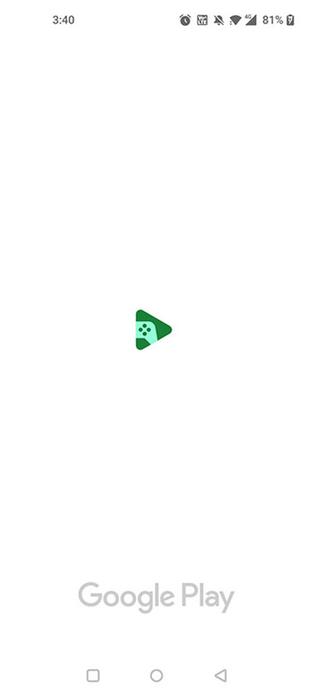
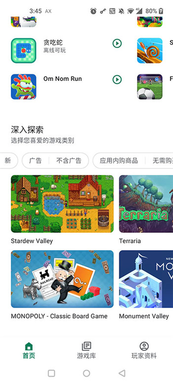

要踩多少坑才能把 Google Play Games 用顺？
从 BIOS 虚拟化到云存档覆盖，从性能警告到订阅到期，过来人盘点 Google Play Games PC 版最容易翻车的五个坎，附防坑清单。
去年 Google Play Games PC 版正式上线的时候，我第一时间就去官方下载装了——在 PC 上玩 Android 游戏这件事本身就很吸引人，而且有 Google 亲儿子的官网背书，总觉得比那些第三方模拟器靠谱。但装完折腾了一周，踩的坑比我预想的多太多。说几个我真的踩过、或者亲眼见朋友踩过的。
坑一：BIOS 虚拟化没开，安装器直接给你一个死讯
这是我踩的第一个，也是最普遍的一个。Google Play Games PC 版在安装前会做一项硬性检查——硬件虚拟化有没有在 BIOS 里开启。我当时那台笔记本用了快四年，BIOS 设置从来没碰过，安装器跳出来一个提示「无法安装，硬件虚拟化未启用」就直接退出了。
症状就是：双击安装包 → 点下一步 → 一个红叉弹窗 → 没了。没有更详细的指引，也没有告诉你怎么开。
原因很简单——Google Play Games PC 版底层跑的是一个 Android 兼容层，这个兼容层必须依赖硬件级的虚拟化才能性能不崩。所有 Intel 和 AMD 的 CPU 其实都支持这个特性，但 BIOS 里默认关闭的笔记本不在少数，尤其是品牌机和超极本。
解法两步。先确认是不是真没开：任务管理器（Ctrl+Shift+Esc）→ 性能 → CPU，右下角看「虚拟化」那一行。如果显示「已禁用」，就得重启进 BIOS。开机按 F2 或 Del（不同品牌不一样），找到 Intel VT-x 或 AMD-V 之类的选项，改成 Enabled，保存重启就行。整个过程不需要拆机器，软件层面的事。

坑二：机械硬盘不是跑不动，是根本不让你装
我有个朋友 16GB 内存、i7 处理器、独显挺强，但 Google Play Games 就是装不上。排查了半小时最后发现——他的游戏盘是一块 7200 转的机械硬盘。
症状是：安装器走到一半进度条卡住不动，或者装完以后每次启动 Google Play Games 都要等半分钟以上，进去了切游戏目录的时候还会偶发卡死。
我后来翻了一下Google Play Games文档才发现官方明确要求 SSD（固态硬盘）10GB 可用空间，但不少人没注意这一条——觉得自己硬盘够大就行，机械硬盘读写慢个几倍有什么关系。实际上 Android 兼容层对磁盘 IO 的需求比你想象的高很多，启动、切页面、加载游戏资源，每一步都在频繁读写。机械硬盘的随机读写速度只有 SSD 的几十分之一，Google 索性把它列为硬性门槛。
解法就一条：换到 SSD 上装。哪怕把整个客户端搬到 SSD 的某个目录都行，别勉强在机械硬盘上死撑。
坑三：云存档被覆盖了，你根本救不回来
这个坑我自己没踩，但亲眼见朋友踩过，至今还在捶胸顿足。
朋友在手机上玩某款 RPG 已经通关大半，中间换了一次手机——在新手机上第一次打开游戏的时候弹出了「发现云存档，是否恢复？」，他没仔细看就点了「不恢复，从新存档开始」。结果老存档被新的覆盖了，老存档里几百小时的进度直接没了。Google Play Games 的云存档没有版本历史这个功能，覆盖就是覆盖，找不回来。
云存档的工作机制是全自动的——游戏过一关、退出游戏、手动保存的时候都会触发同步。但它的冲突解决逻辑很简单：谁的时间戳新就用谁。没有人工介入的选项，没有「保留旧存档另存一份」的功能。
防的办法只有一个：换设备前，先让旧设备同步完再换。具体操作是：旧设备打开目标游戏 → 等个一两分钟（别马上退）→ 进 Google Play Games 设置里找「已保存游戏」页面，确认最后同步时间是刚刚 → 再关旧设备、换新设备。这几分钟能帮你保住几百小时的进度。
另外一个小细节：部分游戏在 Google Play 商店页面上有「Google Play Games」徽章，但这不等于它开了云存档——有成就和排行榜的徽章，云存档可能还是没开。最靠谱的办法就是刚才说的，在两台设备上各玩一小段试试。

坑四：硬跑红色警告的游戏，是在跟自己电脑赌气
Google Play Games PC 版有个我挺喜欢的功能——它会在游戏详情页主动告诉你这款游戏在你的硬件上是绿（应该能跑）、黄（能跑但性能不佳）还是红（大概率跑不动）。这比那些模拟器默默给你跑一个卡顿游戏强多了。
但总有人不信邪。我有个同事，显卡是 Intel UHD 630 核显，硬跑一款被标红的 3D 开放世界游戏。第一次启动直接闪退，第二次调了模拟器分辨率进去了，帧率个位数，GPU 温度五分钟飙到 90 度以上，最后 Windows 过热保护自动关机。
Google 标红不是随便乱标的——它会对比你的显卡等级、CPU 核心数、内存余量和游戏要求的硬件门槛。红色警告意味着你的 PC 大概率在启动阶段就会被 Google Play Games 的兼容层杀掉进程，或者勉强跑起来也是 GPU 长期满载、温度飙升的状态。
解法很简单：别硬跑。目录里有个「隐藏性能不佳的游戏」筛选器，勾上以后黄色和红色警告的游戏直接从你的目录里消失，省得看了心痒痒。真想玩某款标红的，先加内存或者换个独显再说。
坑五：Play Pass 订阅到期，游戏说没就没
2026 年 3 月 Google Play Games PC 版和 Play Pass 打通以后，不少人冲了订阅——手机上有订阅，PC 上直接能用 Play Pass 专区里的几千款付费游戏，一笔订阅费搞定两端，听着挺香。
但坑在订阅到期那刻。Play Pass 不是买断，是订阅。到期以后你已经安装在本地的 Play Pass 游戏会瞬间变回付费游戏，打开会提示需要付费解锁才能继续玩。安装包还在硬盘上，但就是玩不了。没有宽限期，没有渐进式降级，说没就没。
还有个容易忽略的点：Play Pass 包含的游戏不一定都在 PC 上能跑——Google Play Games 有自己的 PC 兼容性筛选，某款手机上能玩的 Play Pass 游戏在 PC 端目录里可能直接搜不到。手机订阅 ≠ PC 端有同款游戏。
订阅的时候想清楚，要么订了就持续续订，要么到期前把游戏里需要付费解锁的内容在订阅期内搞定。别以为 Play Pass 游戏是白拿的。
防坑清单速查
- 装之前先自查：任务管理器看 CPU 虚拟化状态、确认系统盘是 SSD、确认 Windows 版本 ≥ v2004，省得装到一半失败才回头排查
- 换设备同步旧存档：旧设备先开游戏等同步完成，看一眼「已保存游戏」里的最后同步时间再换，别让两边存档直接冲突
- 信性能警告别硬跑：红色警告的游戏别碰，黄色警告的可以试试但开着温度监控，绿色的随便
- Play Pass 按需订阅：想长期玩就持续订，想体验一次性的到期前把要的内容搞定，别想着买断
- 管理员账户装：安装时如果弹权限请求一定要点同意，用普通用户账户装大概率失败
Google Play Games PC 版整体用下来其实体验还不错，比我之前试过的几款模拟器稳定，而且有 Google 账号统一管理成就和排行榜。但这些坑如果提前知道，踩的几率会小很多。装好之后花十分钟把这些检查一遍，之后基本就是省心用了。这份踩坑笔记参考的完整资料在 GitHub、Gitee 和 GitCode 都能找到。